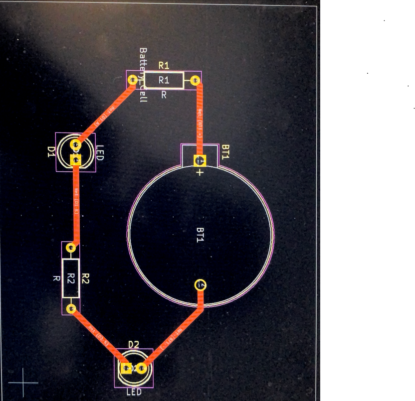
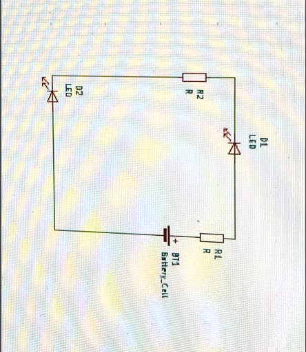

Computer Controlled Cutting
This is my first iteration of learning how to cut circuits using KiCad. The photos will come out low quality due to computer issues which led to being unable to take proper photos of what I did.
Circuit 1
This is the finalized circuit I made with a battery cell, 2 LED's, and 2 Resistors. This is done after the procress shown in the second image, and in here I had to connect the wires and creating the circuit outline.
Circuit 2
This is the first step to making a circuit where I started with a blank page and had to add two resitors, a battery cell, and 2 LED's onto a wire and then save it to create the actual circuit.